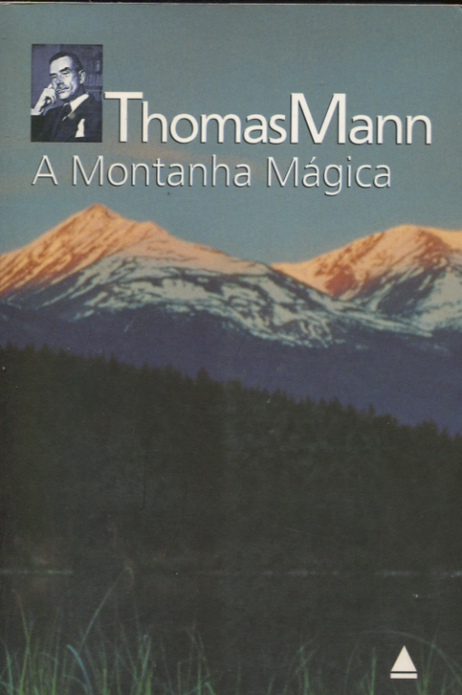

A Montanha Mágica
Publicado em 13 de maio 2025
Thomas Mann é o maior romancista da língua alemã, e A Montanha Mágica é o melhor exemplo dessa defesa.
A narrativa é sensível e filosófica. Ambientado em um sanatório nos Alpes Suíços, o livro mergulha em discussões sobre tempo, doença e a condição humana, tudo através da jornada de Hans Castorp.
É uma leitura densa, mas transformadora — daquelas que fazem você sentir que envelheceu intelectualmente alguns anos ao virar a última página.